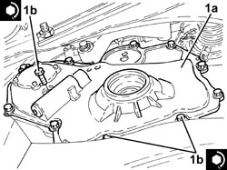

1020D14 FRONT CRANKSHAFT OIL SEAL COVER - R.R AND REPLACE SEALS FOR VERSIONS WITH OIL PUMP ON CRANKSHAFT, TIMING SIDE
- Path
- Procedures > 10 ENGINE > 1020 CRANKCASE SUMP AND COVERS > 1020D OIL SEALS ON CRANKSHAFT > 1020D14 FRONT CRANKSHAFT OIL SEAL COVER - R.R AND REPLACE SEALS FOR VERSIONS WITH OIL PUMP ON CRANKSHAFT, TIMING SIDE
- Kind
- repair procedure (removal / refitting; the operation number is the code)
- Applies to
- all engines; all production periods
- Interactive page
- https://sloeber94.github.io/elrnDB-aBrrSpdr/en/#/946001838
Applies to: engines: 2.2 JTS; all production periods
 Removing
Removing
 Refitting
Refitting- Position the vehicle on a lift.
Op. 4450B04 RIGHT FRONT WHEEL - R.R
Op. 7055B66 ENGINE COMPARTMENT DUST COVER IN RIGHT FRONT WHEEL ARCH - R.R.
Op. 1092G10 SINGLE ENGINE BELT - R.R
Op. 1092A10 CRANKSHAFT PULLEY - R + R
Op. 1092G14 ENGINE COMPONENT SINGLE BELT MOVING TENSIONER - R + R
1. Undo the bolts (1a) and remove the crankshaft front oil seal cover (1b).

Applies to: engines: 2.2 JTS; all production periods
1. Remove the crankshaft front oil seal cover (1a) destructively by cutting through points (1b) shown in the figure.

Applies to: engines: 2.2 JTS; all production periods
- Working at the bench, remove the oil seal from the timing chain cover.
Applies to: engines: 2.2 JTS; all production periods
Refitting
Removing1. Fit a new oil seal (1a) on the timing chain cover using the tool (1b).
Tool | Description | Function | Validity |
|---|---|---|---|
1860099000 | Fitting tool | Fitting timing chain cover oil seal | 1.9 JTS 2.2 JTS |

Applies to: engines: 2.2 JTS; all production periods
1. If the crankshaft oil seal front cover gasket has been removed, cut the section that remains attached to the rigid engine mount to allow installation.

Applies to: engines: 2.2 JTS; all production periods
- Refit the crankshaft front oil seal cover gasket and arrange as shown above.
1. Place the crankshaft front oil seal cover (1a) in its housing and secure it tightening the bolts (1b) to the recommended torque.
Component | Fastening | dia | Value (daNm) | Validity |
|---|---|---|---|---|
Crankshaft oil seal front cover | Bolt | M8 | (engine block side) 2.1 | 1.9 JTS 2.2 JTS |

Applies to: engines: 2.2 JTS; all production periods
Op. 1092G14 ENGINE COMPONENT SINGLE BELT MOVING TENSIONER - R + R
Op. 1092A10 CRANKSHAFT PULLEY - R + R
Op. 1092G10 SINGLE ENGINE BELT - R.R
Op. 7055B66 ENGINE COMPARTMENT DUST COVER IN RIGHT FRONT WHEEL ARCH - R.R.
Op. 4450B04 RIGHT FRONT WHEEL - R.R
- Remove the vehicle from the lift.
Applies to: engines: 3.2 JTS; all production periods
Applies to: engines: 2.4 JTD 20v; all production periods
- On this car, it is not possible to remove/refit the crankshaft front oil seal cover on the car.
To perform this operation, remove/refit the power unit
Op. 1004B10 POWER UNIT WITH MANUAL GEARBOX - R.R
and then work at the bench, customising the engine service procedures for this operation.
Topics linked from this page (10)
- 1004B10 POWER UNIT WITH MANUAL GEARBOX - R.R
- 1004D10 POWER UNIT (MANUAL GEARBOX), REMOVED, DISMANTLE AND REASSEMBLE
- 1004D40 ENGINE - POSITION ON STAND AND REMOVE
- 1004E10 ENGINE, REMOVED - REMOVE CYLINDER HEAD AND OIL SUMP FOR INSPECTION - INCLUDES POSITIONING ON STAND AND REMOVAL
- 1004E20 ENGINE - DISMANTLE AND REASSEMBLE FOLLOWING OPERATION 1004E10 - WASH AND CHECK DISMANTLED PARTS - REFIT CYLINDER HEAD AND OIL SUMP - DOES NOT INCLUDE REPAIRS TO CYLINDER HEAD AND AUXILIARY UNIT
- 1092A10 CRANKSHAFT PULLEY - R + R
- 1092G10 SINGLE ENGINE BELT - R.R
- 1092G14 ENGINE COMPONENT SINGLE BELT MOVING TENSIONER - R + R
- 4450B04 RIGHT FRONT WHEEL - R.R
- 7055B66 ENGINE COMPARTMENT DUST COVER IN RIGHT FRONT WHEEL ARCH - R.R.